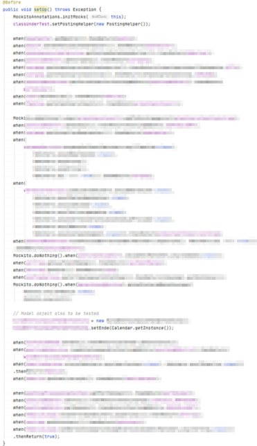
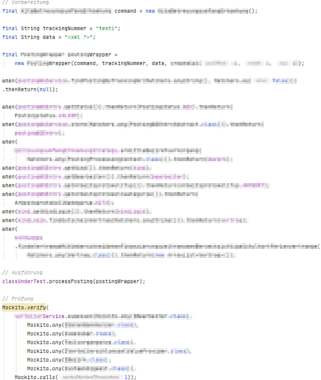
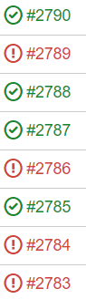
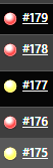
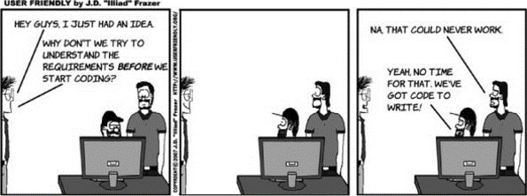

TDD - Test Driven Development
(Or how to have good night sleep after coding sessions)
by MarMerWe never have the time and the budget to do things right. But obviously we have the time and budget to do it often.
by the colleague of an ex-colleague
Agenda
- Motivation
- Tests
- Theory
- Critics
- Exercises
Costs

Costs
Coders Kitchen (2021) - Cost of fixing vs. preventing Bugs (at Google)Costs
Coders Kitchen (2021) - Cost of fixing vs. preventing Bugs (at Google)Costs
 Why Agile Software Development Techniques Work: Improved Feedback
Why Agile Software Development Techniques Work: Improved Feedback
Costs
NIST (2002) - Planing Report 02-3 - The Economic Impacts of Inadequate Infrastructure for Software Testing p. 94Costs
NIST (2002) - Planing Report 02-3 - The Economic Impacts of Inadequate Infrastructure for Software Testing p. 94Costs
 Manning Publications (2020) - Unit Testing Principles, Practices and Patterns
Manning Publications (2020) - Unit Testing Principles, Practices and Patterns
Expected outcomes:
- Cost savings
- less defects in production
- improved Maintainability/Quality*
- Sustainability
- design quality
- improved modularity
- Customer satisfaction
- process improvement (customer collaboration)
- predictability of development time
* if you don't go blind
Good vs. evil tests

Quality - DDT (test after)
public void testFindAll(){
final List <Role> list = repo.findAll()
Assert.assertNotNull(list);
for (final Role role : list) {
System.out.println(role);
}
}
Quality — symptoms of DDT
- Verify what the code does instead of what the code was intended to do
- They often...
- miss professional and technical use cases*
- are less clean, readable and maintainable
- have an improper scope**
Quality - Signs of bad tests
@Test
void testThisClassWorksFine throws Exception{
// Arrange
final var job = FancyJob();
// Act
job.register();
// Assert
assertEquals(2021, job.getExecutionYear());
assertEquals(5, job.getExecutionMonth());
assertEquals(31, job.getExecutionDay());
assertEquals("1337,42", job.getCalculationResult());
}
Quality - Signs of bad tests
@Test
void testShouldRecalculateByExecutionMonth
throws Exception{
// Arrange
RecalculationBatchJob.class
.getField("executionDate")
.set(job,"2020-29-05");
// Act
RecalculationBatchJob.class
.getMethod("register")
.invoke(job);
}
Quality - Signs of bad tests
@Test
void testShouldRecalculateAllCostsByBaseCosts
throws Exception{
// Arrange
var job = new RecalculationBatchJob();
// Act
job.register();
// Assert
assertEquals(
getBaseCostsFrom("c:\\users\\documents\\accounts.json"),
job.getCalculatedCosts());
}
Quality - Signs of bad tests
Test Setup
Test Method
Quality - Signs of bad tests
- These are all builds of the main branch
- The Failing test is always the same


Quality - Signs of good tests
- communicate intention clearly
- give expressive feedback
- run reliably and fast
- easy to maintain and understand
types of tests (simplified)
Acceptance
- UI
- Integrative*
- Unittests**
- Solitary/Micro-test*
- Sociable
*UncleBob (2017) - TestDefinitions **Martin Fowler (2014) - Unittests by Martin Fowler
types of tests (simplified)
- Integrative*
- Unittests**
- Solitary/Micro-test*
- Sociable
*UncleBob (2017) - TestDefinitions **Martin Fowler (2014) - Unittests by Martin Fowler
Test-pyramid
* explorative and other manual tests
100% Branch-Coverage with Unittests
@startuml
skinparam handwritten true
skinparam monochrome reverted
skinparam backgroundColor transparent
skinparam node{
backgroundColor<<A>> #FFFFFF
backgroundColor<<B>> #CCCCCC
backgroundColor<<C>> #999999
}
node A1 as "1"<<A>>
node A2 as "2"<<A>>
node A3 as "3"<<A>>
node B1 as "1"<<B>>
node B2 as "2"<<B>>
node B3 as "3"<<B>>
node C1 as "1"<<C>>
node C2 as "2"<<C>>
node C3 as "3"<<C>>
interface A as " "
interface B as " "
interface C as " "
A -[bold,#LightGray]-> A1
A -[bold,#LightGray]-> A2
A -[bold,#LightGray]-> A3
B -[bold,#darkGray]-> B1
B -[bold,#darkGray]-> B2
B -[bold,#darkGray]-> B3
C -[bold,#Gray]-> C1
C -[bold,#Gray]-> C2
C -[bold,#Gray]-> C3
@enduml
9 Tests
100% Branch-Coverage with Integrative Tests
@startuml
skinparam handwritten true
skinparam monochrome reverted
skinparam backgroundColor transparent
skinparam node{
backgroundColor<<A>> #FFFFFF
backgroundColor<<B>> #CCCCCC
backgroundColor<<C>> #999999
}
node A1 as "1"<<A>>
node A2 as "2"<<A>>
node A3 as "3"<<A>>
node B1.1 as "1" <<B>>
node B2.1 as "2" <<B>>
node B3.1 as "3" <<B>>
node B1.2 as "1" <<B>>
node B2.2 as "2" <<B>>
node B3.2 as "3" <<B>>
node B1.3 as "1" <<B>>
node B2.3 as "2" <<B>>
node B3.3 as "3" <<B>>
node C1.1.1 as "1" <<C>>
node C2.1.1 as "2" <<C>>
node C3.1.1 as "3" <<C>>
node C1.1.2 as "1" <<C>>
node C2.1.2 as "2" <<C>>
node C3.1.2 as "3" <<C>>
node C1.1.3 as "1" <<C>>
node C2.1.3 as "2" <<C>>
node C3.1.3 as "3" <<C>>
node C1.2.1 as "1" <<C>>
node C2.2.1 as "2" <<C>>
node C3.2.1 as "3" <<C>>
node C1.2.2 as "1" <<C>>
node C2.2.2 as "2" <<C>>
node C3.2.2 as "3" <<C>>
node C1.2.3 as "1" <<C>>
node C2.2.3 as "2" <<C>>
node C3.2.3 as "3" <<C>>
node C1.3.1 as "1" <<C>>
node C2.3.1 as "2" <<C>>
node C3.3.1 as "3" <<C>>
node C1.3.2 as "1" <<C>>
node C2.3.2 as "2" <<C>>
node C3.3.2 as "3" <<C>>
node C1.3.3 as "1" <<C>>
node C2.3.3 as "2" <<C>>
node C3.3.3 as "3" <<C>>
interface A as " "
A -[bold,#white]-> A1
A -[bold,#white]-> A2
A -[bold,#white]-> A3
A1 -[bold,#white]-> B1.1
A1 -[bold,#white]-> B2.1
A1 -[bold,#white]-> B3.1
A2 -[bold,#white]-> B1.2
A2 -[bold,#white]-> B2.2
A2 -[bold,#white]-> B3.2
A3 -[bold,#white]-> B1.3
A3 -[bold,#white]-> B2.3
A3 -[bold,#white]-> B3.3
B1.1 -[bold,#white]-> C1.1.1
B1.1 -[bold,#white]-> C2.1.1
B1.1 -[bold,#white]-> C3.1.1
B2.1 -[bold,#white]-> C1.1.2
B2.1 -[bold,#white]-> C2.1.2
B2.1 -[bold,#white]-> C3.1.2
B3.1 -[bold,#white]-> C1.1.3
B3.1 -[bold,#white]-> C2.1.3
B3.1 -[bold,#white]-> C3.1.3
B1.2 -[bold,#white]-> C1.2.1
B1.2 -[bold,#white]-> C2.2.1
B1.2 -[bold,#white]-> C3.2.1
B2.2 -[bold,#white]-> C1.2.2
B2.2 -[bold,#white]-> C2.2.2
B2.2 -[bold,#white]-> C3.2.2
B3.2 -[bold,#white]-> C1.2.3
B3.2 -[bold,#white]-> C2.2.3
B3.2 -[bold,#white]-> C3.2.3
B1.3 -[bold,#white]-> C1.3.1
B1.3 -[bold,#white]-> C2.3.1
B1.3 -[bold,#white]-> C3.3.1
B2.3 -[bold,#white]-> C1.3.2
B2.3 -[bold,#white]-> C2.3.2
B2.3 -[bold,#white]-> C3.3.2
B3.3 -[bold,#white]-> C1.3.3
B3.3 -[bold,#white]-> C2.3.3
B3.3 -[bold,#white]-> C3.3.3
@enduml
27 Tests
Showcase
Integrational vs. Unit
Code-Coverage vs. Test-Coverage
Branch "IntegrationUnitShowcase"
TDD
Quality - TDD
- Focus tool
- Double entry bookkeeping
- Development process
- evolutionary
- arbitrarily (science-like)
TDD - Theory
TDD - rules
- focus on one detail aka. one test at a time
- New test shows what's missing
- no prod change without a test*
* We talk about exceptions later
TDD - guideline
- create executable specification
- Make tests less specific than prod code
- Don't dig for the gold (simple tests first)
- Talk with the business first
TDD - where to start?
Top Down
- advantages
- Details relevant late
- Early Big picture
- drawbacks
- later fine-tuning of higher level tests is often required*
TDD - where to start?
bottom up
- advantages
- you can start with known details early
- drawbacks
- implementation of higher levels is often forced to fit lower level details
- late big picture can lead to wasted time in details
- unnecessary details are implemented quite often
TDD - critics
- practice and discipline is required
- -> Takes about 3-4 months for full speed
- -> You can speed it up with some code katas
- Small changes lead to lots of red tests
- -> they do too much or are coupled too tight
- -> In general, red tests are good. They protect you from accidental damage
- To expensive/slow
- -> remember the studies
Faster without TDD?
Robert C. Martin (2018) - Clean Architecture
Kata

Kata Morse

{kind=link}
Kata: Morse
Domain - Sender
- Given: a message-string has to be translated into a morse-string
- Basic assumption: No one will pass messages with a length smaller than two characters
- (incomplete) Dictionary: see branch "morse" /src/main/resources
- Unknown Symbols are translated into the question-mark-morse-code (..--..)
- A Morse code is structured as follows:
- A Symbol is represented by dots and dashes
- There is a space between dots and dashes(short pause)
- There are three spaces between words (long pause)
- Example: "The pug" = "- .... . .--. ..- --."
Kata: Morse
Domain - Reciver
- Given: a morse-string has to be translated into a message-string
- Basic assumption: No one will pass messages with a length smaller than two characters
- (incomplete) Dictionary: see branch "morse" /src/main/resources
- Unknown morse-symbols are translated into a question-mark (?)
- A Morse code is structured as follows:
- A Symbol is represented by dots and dashes
- There is a space between dots and dashes(short pause)
- There are three spaces between words (long pause)
- Example: "- .... . .--. ..- --." = "The pug"
Kata: Morse
CLI - Console
- Implement the domain within a CLI application
- The application has exactly one parameter which is the input string to translate
- it automatically recognizes the input either as...
- ...morse-message
- ...plain-text-message
- The result of the translation has to be printed at the console
Kata: Morse
CLI - File
- Implement the domain within a CLI application
- The last parameter is for the input string to translate
- it automatically recognizes the input either as...
- ...morse-message
- ...plain-text-message
- The result of the translation has per default to be printed at the console
-
It shall be possible to pass input files or output files with -i and/or -o
- example call: "morse.jar [-o=<outFile>][-i=<inFile>|<inputString>]"
- Each file can have multiple lines to translate
- You can only pass either an inFile or an input-string
Kata: Morse
CLI - Signal
- In the real world, morse codes are represented by the length of electrical signals. Either there is no signal (0) or a signal (1)
- Add the ability to translate those signals represented by "0" and "1" to the application
- depending on the sender the timing (length is different) is different
- Hint1: we assume the timing is constant
- Hint2: you could translate from electrical to morse to plain-text
| signal type | timing factor | example with timing = 1 | example with timing = 3 |
|---|---|---|---|
| pause between words | 7 | 0000000 | 000000000000000000000 |
| pause between symbols | 3 | 000 | 000000000 |
| pause between dots/dashes | 1 | 0 | 000 |
| dashes | 3 | 111 | 111111111 |
| dot | 1 | 1 | 111 |